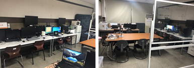
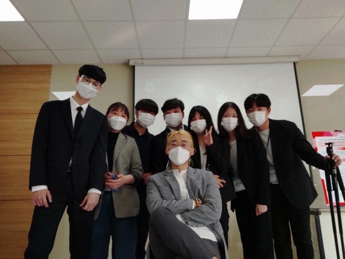
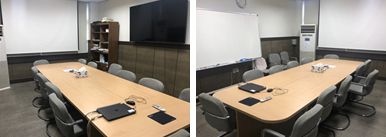

컴퓨터정보과 소개
컴퓨터정보과 학과안내
컴퓨터정보과는 웹 · 모바일앱 · 데이터베이스 · 인공지능 · 사물인터넷 · 클라우드컴퓨팅 등 스마트 IT 산업 분야의 실력있는 소프트웨어 개발 전문가 양성을 목표로 교육하고 있습니다. 학생들은 웹 및 모바일 앱개발, 프로그래밍 언어, 데이터베이스, 소프트웨어 설계 및 모델링 등 체계적인 이론과 실습을 통하여 기초 능력을 학습하고, 그 바탕 위에서 다양한 팀 프로젝트 통해 심화 학습 및 현장 실무 능력을 키우고 있습니다. 정규교육과정 이외에도 학생들은 전공동아리 활동, 캡스톤 디자인 프로젝트, 각종 대외 소프트웨어 개발 공모전, 전국 대학생 해커톤 대회 등에 출전하여 출중한 결과를 내고 있습니다. 이러한 밀도 높은 교육을 통해 학생들은 졸업 후 IT 분야의 전문 인력으로 진출하고 있습니다.
교수소개
성명 : 김주현
성명 : 김종현

성명 : 김진숙
성명 : 백건효

성명 : 허봉식
교육과정
컴퓨터정보과는 웹 · 모바일 앱 · 데이터베이스 · 인공지능 · 사물인터넷 · 클라우드 컴퓨팅 등 스마트 IT 산업 분야로 교육과정을 구성하고 있으며 실력 있는 소프트웨어 개발 전문가 양성을 목표로 기본 이론과 팀 프로젝트 수업을 통해 심화 학습 및 학생들의 현장 실무 능력을 키우고 있습니다. 정규과정의 이수체계도와 교육과정표는 다음과 같습니다.
컴퓨터정보과 박현호
컴퓨터정보과 동아리
컴퓨터 소프트웨어 분야는 기술발전이 급격히 이루어지는 분야인 만큼 2년간의 교육과정에서 이런 변화를 따라잡기가 어렵다. 따라서 외부활동보다는 학과 내에서 실시되는 다양한 프로젝트를 완벽히 수행하고 정보처리 산업기사 자격증을 취득하여 각자의 프로그래밍 능력을 높이는 방향으로 동아리 활동을 하고자 한다.
 컴퓨터정보과 동아리
Computer Software 분야에서는 실무능력이 가장 중요하지만 2년간의 교육과정으로 모든 준비를 갖추기는 어렵다. 따라서 전공 동아리를 통해 다양한 프로젝트와, 대회를 자발적으로 준비하면서 실무능력을 향상시키고, OCJP 및 정보처리 산업기사 자격증을 취득하여 프로그래밍 능력을 향상시키는 방향으로 동아리 활동을 하고자 합니다.
{kind=link}
{kind=link}
{kind=link}
{kind=link}
{kind=link}
{kind=link}